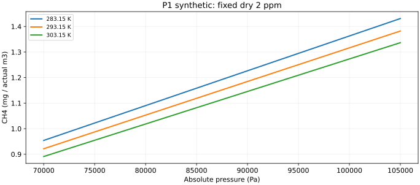
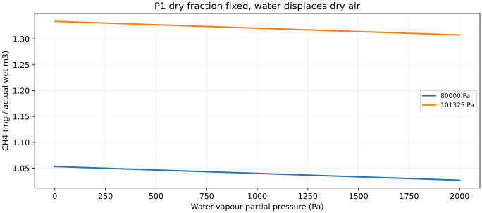
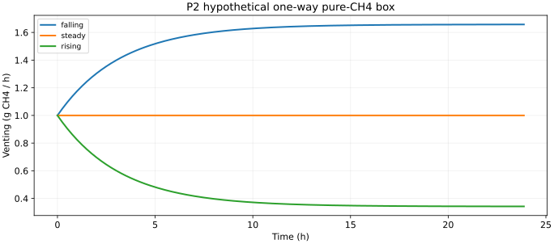
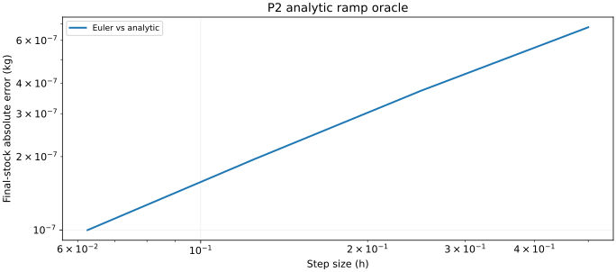
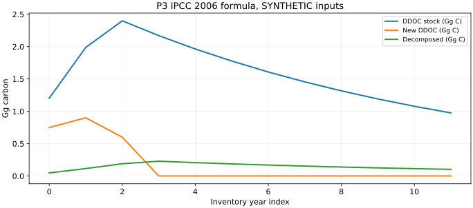
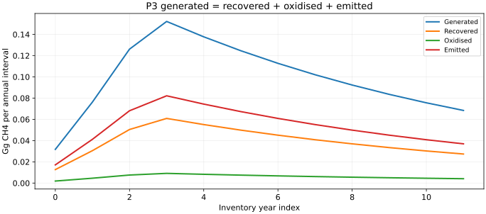
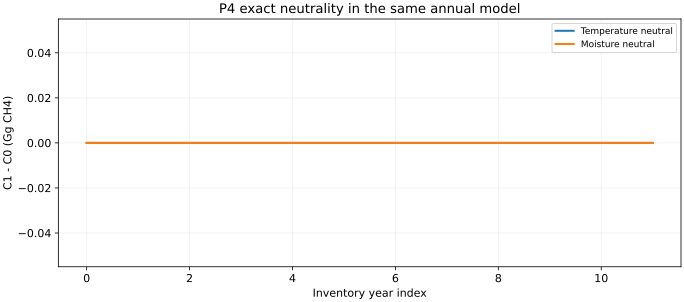
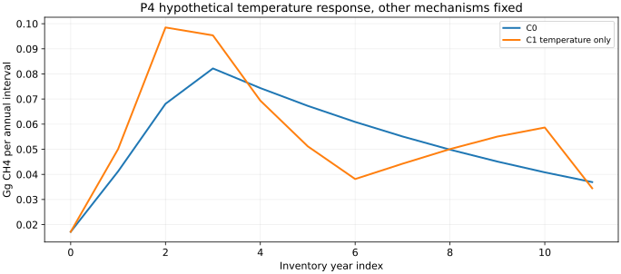
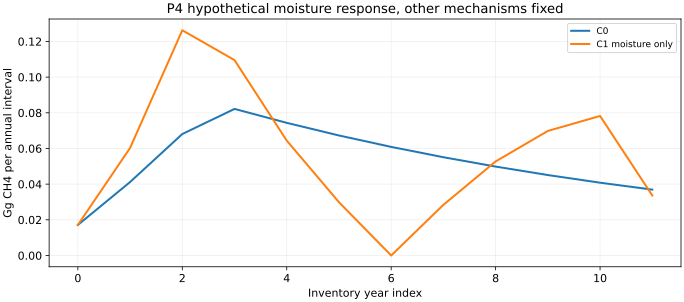
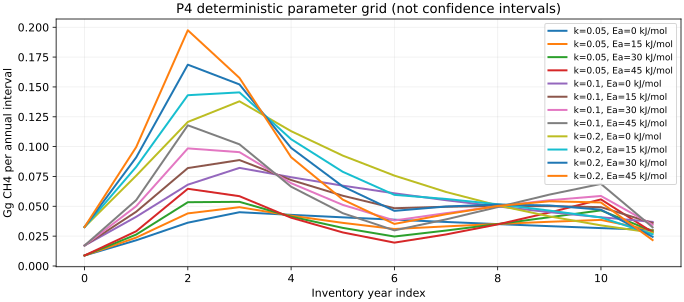

受限物理计算验收
CLIMATEOS-PHYSICS-VALIDATION-001 · V0.1
四项计算已运行
真实设施验证仍待数据
参考公式与合成输入。固定参数、独立算术、质量守恒和中性响应均可复算。
| 模块 | 实际执行 | 证据类型 |
|---|---|---|
| P1 | 温压、湿度和参考条件转换 | 理想气体算术 |
| P2 | 储存与单向逸散 | 未校准纯甲烷箱 |
| P3 | 年度 IPCC FOD | 2006公式、合成废物史 |
| P4 | 单独温度/水分响应 | 嵌套假设模型 |
D3 DATA_NOT_READY · P1-A PENDING · 无 ACCU、气候归因或部署
公式、代码与原始数值
P1：同摩尔分数下的温压转换
c = xdry(P − e) M / (R T) r = xdry M / Mair
固定 2 ppm、293.15 K，P 为站点绝对压力。R=8.314462618 J/(mol·K)，M=0.016043 kg/mol。

| P (Pa) | c (mg/实际m³) | r (mg/kg dry air) |
|---|---|---|
| 101325 | 1.333853 | 1.107751 |
| 80000 | 1.053129 | 1.107751 |
体积浓度变化不能直接解释为排放质量变化。Mair=0.028965 kg/mol 是声明的近似。
公式、代码与原始数值
P1：湿度与参考体积
xwet = xdry(P − e)/P
Vref,dry = Vactual,wet (P − e)/Pref · Tref/T

| 80000 Pa下 e (Pa) | 湿摩尔分数 (ppm) | 1实际湿m³对应参考干m³ |
|---|---|---|
| 0 | 2.0000 | 0.735673 |
| 500 | 1.9875 | 0.731075 |
| 1000 | 1.9750 | 0.726477 |
| 2000 | 1.9500 | 0.717281 |
参考条件为 101325 Pa、273.15 K、干气。已检查正逆转换、零极限和同一气体量的甲烷质量一致。
公式、代码与原始数值
P2：合成储气箱与边界
Pi = a m，a = RT/(MV)
v = C max(Pi − Pe, 0)，dm/dt = g − v
纯甲烷、定温定容箱。V=1 m³，T=293.15 K，g=0.001 kg/h，C=2×10⁻⁶ kg/(h·Pa)，初始压差500 Pa。参数全部合成，单向阀无进气。

这不是垃圾体多孔介质或负压集气模型。短期逸散可来自原有储存，不能解释为产气立即增加。
公式、代码与原始数值
P2：质量守恒与步长误差
m0 + ΣgΔt − ΣvΔt − mend = residual
| 情景 | 输入kg | 逸散kg | 库存变化kg | 残差kg |
|---|---|---|---|---|
| falling | 0.024000 | 0.037632 | -0.013632 | -5.83e-16 |
| steady | 0.024000 | 0.024000 | 0.000000 | 0.00e+00 |
| rising | 0.024000 | 0.010368 | 0.013632 | 2.74e-16 |
| sealed | 0.024000 | 0.000000 | 0.024000 | -8.01e-15 |
| zero_generation | 0.000000 | 0.016921 | -0.016921 | 4.41e-16 |
| underpressure | 0.000000 | 0.000000 | 0.000000 | 0.00e+00 |

稳定/正性约束 C·a·Δt ≤ 1。本轮 Δt=0.125 h；不稳定步长拒绝执行，不靠截零掩盖守恒误差。封闭、零生成、初始欠压均已作为对照运行。
公式、代码与原始数值
P3：IPCC 2006 年度 FOD
Dt = Wt·DOC·DOCf·MCF
At = Dt + At−1e−k
Decompt = At−1(1 − e−k)

废物史10、12、8 Gg后归零；初始DDOC=0.5 Gg C；k=0.1 yr⁻¹。DOC=0.15、DOCf=0.5、MCF=1均为合成参数，未取默认参数表。
新增投入本年不衰减，下一年1月1日开始，代表平均六个月延迟。没有混入2019参数表。
P3：甲烷分配与独立算例
G = Decomp · F · 16/12
E = (G − Rrecovered)(1 − OX)

| 12年积分 | 运行结果 |
|---|---|
| 生成 Gg CH4 | 1.183144192 |
| 逸散 Gg CH4 | 0.638897864 |
| 末期DDOC Gg C | 0.975283712 |
独立手算：10 Gg投入、零初始库存、k=ln2，第二年分解0.375 Gg C，生成0.25 Gg CH4，逸散0.135 Gg CH4。1 Gg=10⁶ kg。守恒仅覆盖DDOC碳库存和甲烷分配，不是所有废物组分的质量平衡。
P4：C0与中性响应完全重合
C0直接使用P3函数。C1保留相同废物史、初始库存、延迟、年度步长、回收与氧化，只替换有效衰减率 k。

| 检查 | 结果 |
|---|---|
| 温度中性，完整输出比较 | exact equality |
| 水分中性，完整输出比较 | exact equality |
| 最大逸散差 Gg CH4 | 0 |
| 气体储存/回收/氧化重复计入 | 无，P2独立，不与P3/P4串接 |
年度内k为常数，使用指数式精确积分。未进行更细时间步的场址预测，也未制造日尺度排放精度。
公式、代码与原始数值
P4：单独温度响应
kT = k0 exp[−Ea/R · (1/T − 1/Tref)]
Arrhenius数学族，Tref=293.15 K，Ea=30000 J/mol为合成值。输入是虚构的年度过程温度，不是Cooma气温或垃圾体实测温度。

| 12年逸散积分 | Gg CH4 |
|---|---|
| C0 | 0.638897864 |
| 温度C1 | 0.662229328 |
有限时间窗积分差异与末期库存相对应，不是证明生成潜力增加或模型更准确。

P4：单独水分响应
f(θ) = θ/θref (θ≤θref)
f(θ) = 1+(θ−θref)/(1−θref) (θ>θref)
kθ = k0 f(θ)，θref=0.5

| 12年逸散积分 | Gg CH4 |
|---|---|
| C0 | 0.638897864 |
| 水分C1 | 0.670311180 |
分段线性是自定的示例响应，数值插值有数学依据，生物物理响应尚待验证。没有降雨转土壤水分映射，没有同时加入温度响应。

参数敏感性与不可辨识性

| 探索范围 | 12年逸散结果 |
|---|---|
| 温度参数网格极值 Gg CH4 | 0.401194 至 0.891969 |
| 水分参考值0.4/0.5/0.6 Gg CH4 | 0.699950 / 0.670311 / 0.637041 |
这不是概率分布或置信区间。仅凭净排放不能同时识别生成、覆盖层氧化、收集和储存；本轮没有拟合任何参数。
较快衰减可把释放提前，但长期潜力受投入库存限制。缺少独立观测时不作模型优劣排序。
验收结果与ChatGPT科学评审
| 验证层级 | 结果 |
|---|---|
| 独立算术/实现测试 | 30项通过，0错误 |
| 完整仓库测试 | 522项，跳过1项，错误0项 |
| P2最大守恒残差 kg | 8.014e-15 |
| P3 DDOC守恒残差 Gg C | 9.992e-16 |
| 中性参数回归 | 精确一致 |
| 独立现场观测验证 | NOT_PERFORMED |
| P2/P4物理假设 | HYPOTHETICAL / UNCALIBRATED |
| 外部CI | 以新Draft PR检查状态为准，独立于本地记录 |
D3 DATA_NOT_READY。P1-A科学准入PENDING。受限计算完成不代表真实设施排放已验证。
请ChatGPT审查：年度延迟、cohort库存和单位是否正确；P2单向箱与P4响应的适用边界是否足够；中性嵌套、守恒和独立oracle是否充分。任何扩大数据、物理过程或现场推断均等待Founder决定。